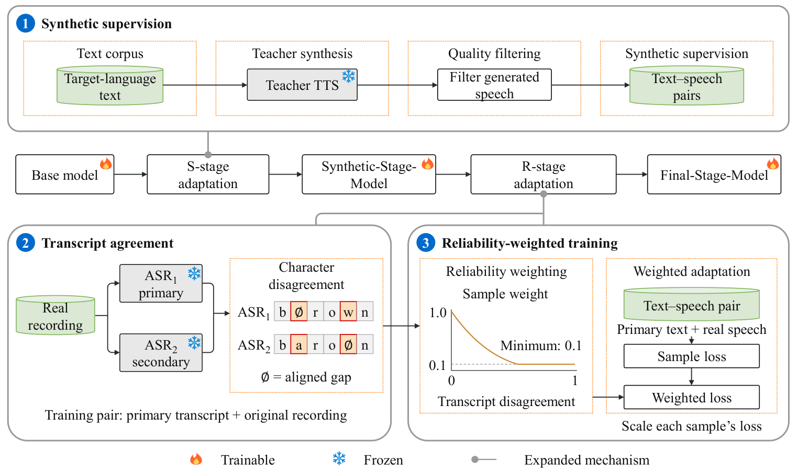

Supervision order matters
Characterize the trade-off between content accuracy and speaker similarity across S, R, S→R, and R→S.
LOW-RESOURCE SPEECH SYNTHESIS · RESEARCH PROJECT
Trust-Aware Progressive Adaptation for Low-Resource TTS
1 Beijing Logic Intelligence Technology 2 University of Washington
3 Beijing University of Posts and Telecommunications
01 / OVERVIEW
The challenge of low-resource TTS
Synthetic speech provides reliable text. Real recordings provide diverse voices. Their order—and the trust placed in each transcript—shape what a model learns.
Adapting a multilingual TTS model to an underrepresented language requires accurate pronunciation and control over an unseen reference speaker. Synthetic-only adaptation can improve content accuracy while reducing speaker similarity. Real-speech adaptation can restore similarity, but noisy ASR transcripts may erode those pronunciation gains.
We first adapt on synthetic pairs (S-stage), then on real recordings (R-stage). Agreement between two ASR systems determines how much each real example contributes to training.
Adapting multilingual text-to-speech (TTS) models to low-resource languages requires learning target-language pronunciation while retaining zero-shot voice cloning with limited transcribed speech. Synthetic speech and real recordings with automatic speech recognition (ASR) pseudo-labels offer scalable supervision, but differ in transcript reliability and acoustic diversity. We find that their training order affects the balance between content accuracy and speaker similarity, while noisy pseudo-labels can undermine pronunciation learned from synthetic speech. We propose synthetic-to-real adaptation with transcript-agreement weighting: synthetic pairs first establish text–speech correspondences, followed by real recordings to restore speaker conditioning, with agreement between two ASR systems determining each example’s loss weight. Experiments with FireRedTTS3 on Burmese and Lao, and OmniVoice on Burmese, show improved content accuracy and naturalness with competitive speaker similarity. Jointly considering supervision order and reliability when combining synthetic and real speech offers a practical path to low-resource TTS adaptation with less manual transcription.
Characterize the trade-off between content accuracy and speaker similarity across S, R, S→R, and R→S.
Use two ASR transcripts to estimate reliability while keeping the primary transcript as the training text.
Evaluate Burmese and Lao with FireRedTTS3, and Burmese with OmniVoice, supported by controlled ablations.
02 / AUDIO DEMOS
Compare the same target text across adaptation stages. Listen for pronunciation, naturalness, and how closely the generated voice matches the reference.
One example per language, selected by the highest cubic overall listening score in the available collection. Each comparison uses the same target text and reference voice. View full evaluation results ↓
03 / METHOD
Establish target-language text–speech correspondences first. Then recover reference-speaker control with real recordings, reducing the influence of uncertain transcripts.

A fixed teacher synthesizes target-language text. Quality filtering and same-voice reference pairing create synthetic supervision. Adapt the base model with unit sample weights.
Gemini 2.5 Flash supplies the primary text; Omnilingual ASR supplies the comparison. Normalize both, then compute code-point edit distance relative to the primary transcript length.
dᵢ = ED(N(x̃ᵢ), N(A₂(yᵢ))) / max(1, |N(x̃ᵢ)|)
Use cubic decay with a 0.10 floor. Scale each complete sample loss, then average by the number of examples. The ASR scoring is offline and adds no ASR computation at inference.
wᵢ = max(0.10, [1 − min(dᵢ, 1)]³)
Agreement is a proxy for reliability, not verified correctness: both ASR systems can share errors. No transcript fusion or correction is performed. The backbone architecture and objective are retained.
04 / EXPERIMENTAL RESULTS
The cubic S→R method achieves the highest reported H and naturalness MOS in all three evaluated language–backbone groups. These are descriptive rankings.
CER after cubic S→R
15.04% for OmniVoice Base · Table 2
Speaker similarity after cubic S→R
0.45126 after S-stage · Table 1
Naturalness MOS after cubic S→R
3.38 after S-stage · Table 1
| Adaptation strategy | CER (%) ↓ | SIM-O ↑ | H ↑ | MOS ↑ |
|---|
How to read: CER is character error rate (lower is better). SIM-O measures speaker similarity. H is the equal-weight harmonic mean of character accuracy and SIM-O on a 0–100 scale. MOS measures naturalness on a 1–5 scale. “—” means unavailable. Compare CER within each language; the ASR scorers differ.
| System | CER (%) ↓ | SIM-O ↑ |
|---|---|---|
| Fish Audio S2-Pro | 83.894 | 0.6376 |
| MMS-TTS-mya * | 20.487 | 0.1029 |
| F5-Myanmar-TTS v2 | 35.241 | 0.5863 |
| IMS-Toucan | 95.402 | 0.3298 |
| mmSpeech Tacotron * | 78.695 | 0.0914 |
| OmniVoice Base | 15.040 | 0.7021 |
| FireRedTTS3 cubic | 16.902 | 0.6997 |
| OmniVoice cubic | 6.850 | 0.7098 |
* Fixed-voice models: SIM-O is descriptive. All outputs remain scored. Audio examples above include FireRedTTS3 cubic and OmniVoice Base.
On the same FLEURS recordings, official text reduces CER by 8.22 points versus ASR pseudo-labels at uniform weight 1.0.
| Setting | CER (%) | SIM-O |
|---|---|---|
| S starting point | 17.43 | 0.4513 |
| Pseudo-labels · w = 0.5 | 21.17 | 0.6345 |
| Pseudo-labels · w = 1.0 | 23.67 | 0.6487 |
| Official text · w = 1.0 | 15.45 | 0.6342 |
Cubic weighting outperforms shuffled weights and equal-mean uniform weighting under matched broadcast training conditions.
| Setting | CER (%) | SIM-O |
|---|---|---|
| Uniform 1.0 | 23.327 | 0.69391 |
| Uniform 0.5 | 21.023 | 0.69917 |
| Linear · γ = 1 | 23.247 | 0.69555 |
| Cubic · globally shuffled | 21.342 | 0.69843 |
| Cubic · duration-stratified shuffle | 21.130 | 0.69881 |
| Uniform · equal mean | 21.086 | 0.69925 |
| Cubic · γ = 3 | 16.902 | 0.69973 |
The real-example ratio sweep uses 0/10/25/50/75/90/100% real data. Synthetic replay restores less similarity than real-only continuation. Exposure-matched joint training from Base yields 20.160% CER / 0.65120 SIM-O.
Embedding-switch response across 16 texts is 1.3147 / 0.9602 / 1.2723 for Base / S / historical uniform 0.5 S→R. Real adaptation restores response weakened by S.
Recorded rather than generated prefixes improve suffix SIM-O by 0.0739 / 0.0211 for S / historical uniform 0.5 S→R over eight eligible pairs. These interventions were not tested on cubic.
No corresponding intervention or ratio-sweep audio is available in the supplied collection. These results are reported from the manuscript and are not inferred from the selected listening clips.
05 / RESOURCES & CITATION
Read the manuscript, listen to the examples, or cite this work.
@unpublished{lu2026reliable,
title = {From Reliable Text to Real Voices:
Trust-Aware Progressive Adaptation
for Low-Resource TTS},
author = {Lu, Jiayi and Geng, Yizhong and
Yang, Jinghan and Gao, Yingming and Li, Ya},
year = {2026},
note = {Manuscript}
}Manuscript citation. The supplied PDF does not state an accepted venue, DOI, or arXiv identifier.